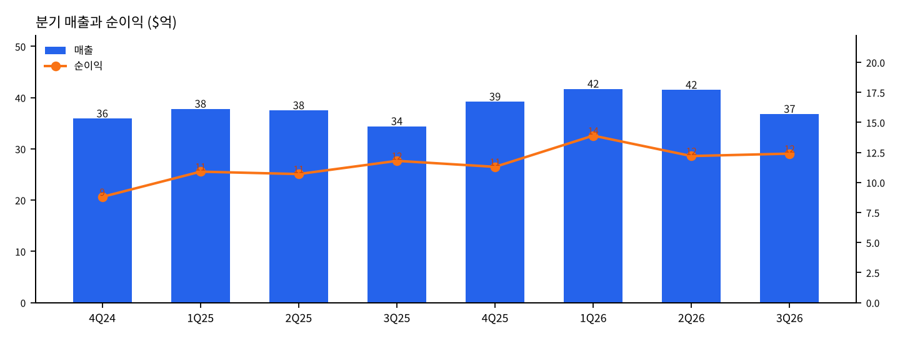
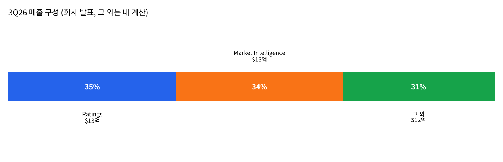
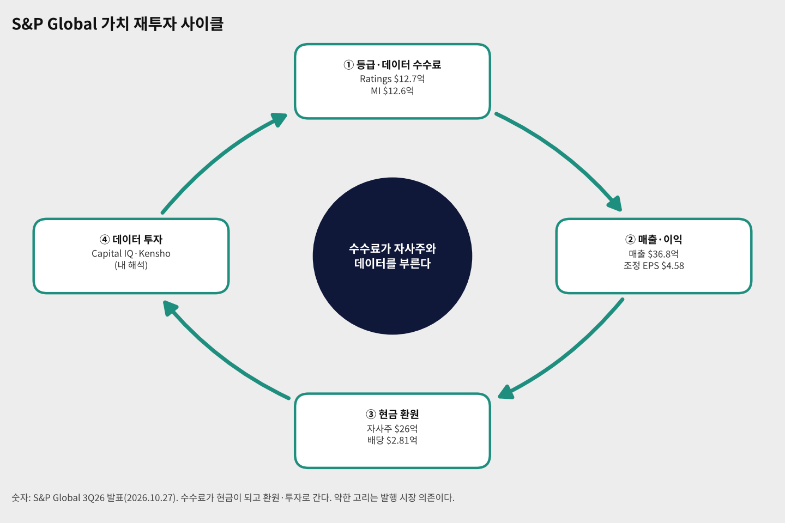

S&P Global은 신용등급 수수료, 데이터 구독, 지수 사용료를 받는다. 자산이 늘고 채권 발행이 늘수록 수수료가 늘어난다.
| 항목 | 내용 |
|---|---|
| 종목 | S&P Global (SPGI) · NYSE · 금융(금융 데이터·지수) · 뉴욕 |
| 최근 분기(3Q26) | 매출 $36.8억, 조정 EPS $4.58 |
| 핵심 사업 | Ratings, Market Intelligence, Indices, Commodity Insights |
| 직원 수 | 약 44,500명(트레이딩뷰) |
| 멀티플 | PER·PEG·P/S는 08~10 항목 표 참조 |
| 직책 | 인물 | 역할·특징 |
|---|---|---|
| CEO | (확인 필요) | 회사 공개 자료 기준 확인 필요 |
| CFO | (확인 필요) | 회사 공개 자료 기준 확인 필요 |
경영 스타일: 포트폴리오 단순화. Mobility를 분사하고 Capital IQ·Kensho의 분리 가능성을 검토하는 방식이다.
Market Intelligence 매출 $12.6억(+7%), Capital IQ·Kensho로 데이터를 판다.
Mobility 분사 후 핵심 사업에 집중한다.
다음 실적발표는 세 가지 질문에 답하는 자리다.
1. 채권 발행이 Ratings 수수료를 키우나?
2. Indices +20%가 이어지나?
3. Capital IQ·Kensho 분리 검토 결과는?
한 줄 판정 규칙: 첫 질문(Ratings 발행)이 이어지면 약한 고리(성장률 9%)가 풀린다.
일정: 4Q26 실적은 2027.02.09 발표 예정이다. FY27 가이던스도 이때 나올 수 있다(확인 필요).
| 분기 | 매출 | 순이익 | EPS | 조정 EPS | 특이 사항 |
|---|---|---|---|---|---|
| 4Q24 | $35.9억 | $8.8억 | 2.85 | 3.57 | |
| 1Q25 | $37.8억 | $10.9억 | 3.54 | 4.13 | |
| 2Q25 | $37.5억 | $10.7억 | 3.50 | 4.19 | |
| 3Q25 | $34.4억 | $11.8억 | 3.86 | 4.47 | |
| 4Q25 | $39.2억 | $11.3억 | 3.75 | 4.07 | |
| 1Q26 | $41.7억 | $13.9억 | 4.69 | 4.70 | |
| 2Q26 | $41.5억 | $12.2억 | 4.12 | 4.83 | |
| 3Q26 | $36.8억 | $12.4억 | 4.25 | 4.58 | Mobility 분사(7.1), 조정 EPS +9% |
매출은 트레이딩뷰 스캐너의 분기 총매출이라 회사가 발표한 순매출과 다를 수 있다. 2026.7.1 Mobility가 분사됐다. 과거 분기 EPS에는 Mobility가 포함돼 있어 분사 전후 비교에 주의한다. 매출·순이익·EPS(GAAP 희석)는 트레이딩뷰 스캐너, 조정 EPS는 트레이딩뷰 실적 페이지의 Reported 값이다. 분기 정렬은 오래된 분기→최신이다.

흐름 요약: 최근 분기 매출은 $36.8억로 전년 동기 $34.4억 대비 +7.0%, 순이익은 $12.4억(전년 $11.8억)다. 최근 4분기 GAAP EPS는 $16.81, 조정 EPS는 $18.18다.
| 항목 | 내용 | 3Q26 매출 | 비고 |
|---|---|---|---|
| Ratings | 신용등급 | $12.7억 | +2% |
| Market Intelligence | 데이터 구독 | $12.6억 | +7% |
| 그 외(내 계산) | Indices·Commodity Insights 등 | $11.5억 | 총 $36.8억에서 위 항목을 뺀 값 |

세 덩어리가 비슷한 비중이다. Indices의 성장이 가장 빠르다.
S&P Global은 시장에 필수적인 정보와 벤치마크를 제공하는 것을 목표로 한다.
| 축 | 내용 |
|---|---|
| 수수료 | Ratings·Indices |
| 구독 | Market Intelligence |
| 환원 | 연간 자사주 $70억+ |

| 이동평균 | 값 | 종가 대비 | 위치 |
|---|---|---|---|
| 5일선 | $462.48 | -3.5% | 종가 아래 |
| 20일선 | $463.73 | -3.7% | 종가 아래 |
| 50일선 | $430.15 | +3.8% | 종가 위 |
| 100일선 | $429.02 | +4.0% | 종가 위 |
| 200일선 | $415.08 | +7.5% | 종가 위 |
52주 고가 $522.47(2026-01-15)·저가 $361.03(2026-02-12) 범위에서 종가 $446.38는 50일선, 100일선, 200일선을 웃돌고 5일선, 20일선은 밑돈다.
| 규칙 | 기준 | 현재 값 | 신호 |
|---|---|---|---|
| 장기 추세 필터 | 종가 vs 200일선 | $446.38 > $415.08 | 매수 |
| 중장기 교차 | 50일선 vs 200일선 | $430.15 > $415.08 | 매수 |
| 단기 교차 | 20일선 vs 50일선 | $463.73 > $430.15 | 매수 |
| 돈키언 채널 | 55일 고가 $485.99 / 저가 $382.21 | 중간값 $434.10 위 | 매수 |
| 1개월 모멘텀 | 21거래일 수익률 | +1.9% (기준 $438.12) | 매수 |
| 3개월 모멘텀 | 63거래일 수익률 | +3.3% (기준 $432.16) | 매수 |
| 6개월 모멘텀 | 126거래일 수익률 | +13.1% (기준 $394.52) | 매수 |
| 12개월 모멘텀 | 252거래일 수익률 | -3.5% (기준 $462.58) | 매도 |
| 종합 (8개 평균) | +0.75 | 강한 매수 |
해석: 매수 신호 7개(장기 추세 필터, 중장기 교차, 단기 교차, 돈키언 채널, 1개월 모멘텀, 3개월 모멘텀, 6개월 모멘텀), 매도 신호 1개(12개월 모멘텀). CTA 점수 +0.75(강한 매수). 14일 ATR $11.14 (2.5%), 52주 고가 $522.47 · 저가 $361.03.
| 가격 | 기준 | 무엇이 바뀌나 |
|---|---|---|
| $485.99 | 55일 고가 | 돌파 시 채널 상단 갱신 |
| $462.58 | 12개월 모멘텀 기준가 | 종가가 이 가격 위면 12개월 신호 매수 |
| $438.12 | 1개월 모멘텀 기준가 | 종가가 이 가격 위면 1개월 신호 매수 |
| $434.10 | 돈키언 중간값 | 55일 채널 중간값 위/아래로 신호가 바뀜 |
| $432.16 | 3개월 모멘텀 기준가 | 종가가 이 가격 위면 3개월 신호 매수 |
| $415.08 | 200일선 | 종가가 이 선 위/아래인지로 장기 추세 신호가 바뀜 |
| $394.52 | 6개월 모멘텀 기준가 | 종가가 이 가격 위면 6개월 신호 매수 |
| $382.21 | 55일 저가 | 이탈 시 채널 하단 갱신 |
가격 수준은 신호가 바뀌는 기준선일 뿐 진입·청산 가격 제안이 아니다. 20일/50일 교차는 이동평균 자체가 움직여 단일 가격으로 표시하지 않았다. 일봉·주봉은 종가 기준 직접 계산(고저 데이터 미사용)이다.
| 악재 요인 | 내용 | 강도 |
|---|---|---|
| 발행 시장 의존 | Ratings 수수료는 채권 발행에 연동 | 중간 |
| 분사 비교 어려움 | Mobility 분사로 과거와 비교 주의 | 중간 |
| 성장률 | 조정 EPS +9% | 참고 |
| 티커 | 회사 | PER(TTM) | PEG | P/S | EPS 성장(YoY) |
|---|---|---|---|---|---|
| SPGI | S&P Global | 24.6배 | 2.21 | 8.13배 | +11% |
| MCO | Moody's | 29.3배 | 0.92 | 10.27배 | +32% |
| MSCI | MSCI | 33.7배 | 1.71 | 13.41배 | +20% |
| ICE | Intercontinental Exchange | 23.4배 | 0.70 | 7.19배 | +33% |
| CME | CME Group | 25.4배 | 1.40 | 16.03배 | +18% |
비교 결론: S&P Global의 PER 24.6배는 Moody's·MSCI·CME Group보다 낮고 Intercontinental Exchange보다 높다. PEG 2.21는 네 곳 모두보다 높다.
현금·부채는 트레이딩뷰 스캐너 값이다. 현금 $24.4억, 총부채 $130.6억(회사 발표).
| 지표 | 값 | 출처 | 해석 |
|---|---|---|---|
| 현금·단기투자 | $24억 | 트레이딩뷰 스캐너(최근 분기) | |
| 총부채 | $136억 | 트레이딩뷰 스캐너(최근 분기) | |
| 순부채(부채−현금) | $112억 | 내 계산 | 현금 대비 부채 부담 |
| 잉여현금흐름(TTM) | $56억 | 트레이딩뷰 스캐너 | |
| TTM 매출 | $159억 | 트레이딩뷰 스캐너 |
| 기준 | 매출 | P/S | 비고 |
|---|---|---|---|
| 내 계산(종가 ÷ 최근 4분기 매출 합계) | $159.2억 | 8.13배 | 시총은 정렬용 데이터에서만 사용 |
| 동종(트레이딩뷰) | – | MCO 10.27배 · MSCI 13.41배 · ICE 7.19배 · CME 16.03배 | 11.19 |
해석: 구독·수수료 현금흐름이 부채와 자사주를 감당한다(내 해석).
EBITDA는 영업활동의 현금 창출력을 보는 지표이고, PEG는 PER을 EPS 성장률로 나눈 값이다. EBITDA·FCF는 트레이딩뷰 TTM 값이다.
| 지표 | 값 | 산출 |
|---|---|---|
| EBITDA(TTM) | $84억 | 트레이딩뷰 스캐너 |
| EBITDA 마진 | 52.8% | EBITDA ÷ TTM 매출(내 계산) |
| FCF 마진 | 35.2% | FCF ÷ TTM 매출(내 계산) |
| PER(GAAP TTM) | 26.6배 | $446.38 ÷ $16.81 |
| PER(조정 TTM) | 24.6배 | $446.38 ÷ $18.18 |
| 방식 | PER | EPS 성장률 | PEG | 판정 |
|---|---|---|---|---|
| 조정 EPS (TTM $18.18) | 24.6배 | +11% ($16.36 → $18.18) | 2.21 | 기준 초과 |
| GAAP EPS (TTM $16.81) | 26.6배 | +22% ($13.75 → $16.81) | 1.19 | 기준 초과 |
판정: 조정 EPS 기준 PEG 2.21 → 1.0 초과 PEG 기준은 1.0 이하 투자 적격, 0.5 이하 적극 매수다. EPS 성장률은 최근 4분기 EPS 합계를 직전 4분기 합계와 비교한 값(내 계산)이고, 일회성 항목이 있으면 조정 EPS 행을 함께 본다.

S&P Global의 사이클: 수수료가 이익과 현금이 되고 그 돈이 자사주와 데이터 투자로 쓰여 다음 수수료 기반을 키운다.
| 고리 | 현재 숫자·근거 |
|---|---|
| ① 등급·데이터 수수료 | Ratings $12.7억 · Market Intelligence $12.6억 |
| ② 매출·이익 | 매출 $36.8억(+7%) · 조정 EPS $4.58(+9%) |
| ③ 현금 환원 | 3Q 자사주 $26억 · 배당 $2.81억 |
| ④ 데이터 투자 | 투자 금액은 보고서에 없음(내 해석) |
사이클의 특징: 약한 고리는 채권 발행 의존이다. "(내 해석)"은 보고서 수치가 아닌 해석이다.